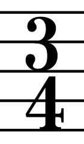

Immutability is a one of characteristics of Value Object.
It means that once value object is created, it can never be changed. So the state is unchangeable.
In this task and at least few next you will develop a TimeSignature class.
It could serve as a great example of a value object.
So here we go with a reminder of what time signatures are:
Time signatures are symbols which describe repeating beat rhythm in a piece of music.
It tells us the total length of all symbols in a bar.
The upper value is called numerator and lower denominator.

As the description states
TimeSignature must contain only two properties:
both of them should be of type
Int and declared using
val not
var.
Doing it that way will ensure immutability of the TimeSignature.
Remember not to use nullable type Int?.